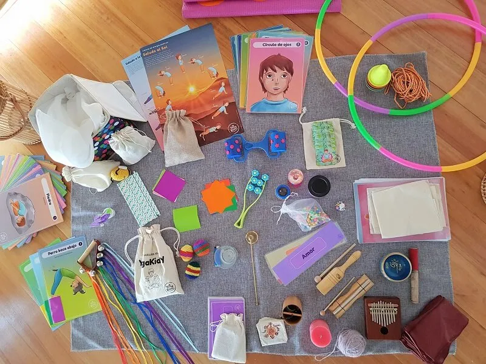

El juego, la diversión y la sorpresa, son aspectos transversales que nunca deben faltar en tu clase de yoga, de esta manera podrás encantar a tus niños y niñas para permitirles una experiencia significativa y que quieran vivir una y otra vez.
Cuando ya llevas un tiempo con un mismo grupo, es importante constantemente innovar en la manera que guías y en los recursos a utilizar.
Los objetos resultan ser buen muy complemento para tus clases de yoga, ya que se convierten en un medio para facilitar el proceso de atención y concentración en los niños y niñas. Tu clase se vuelve más dinámicas y atractiva para todos/as los participantes, respondiendo además a las necesidades sensoriales de la infancia.
Si bien no es indispensable contar con todos estos elementos, te sugiero que paulatinamente vayas incorporando los que sean más cómodos para ti, ya que es de vital importancia que el uso de implementos o cualquier otro recurso debe estar integrado totalmente en ti primero para conseguir objetivos junto a ellos y ellas.
Aquí van algunos ejemplos:
- Pañuelos: Los puedes utilizar para el momento de la relajación, dejando que cada niño/a tenga uno sobre su cuerpo.
- Plumas: Para automasajes.
- Cuerdas y Aros: Creación de circuitos para juegos de asanas.
- Papel lustre: Con ellos pueden confeccionar origami de cierto tipo de posturas.
- Títeres: Te permiten introducir el trabajo de asanas.
- Elementos reciclados (conos de confort, cajas de huevos, bandejas de plumavit, tapas de botellas, etc.) Ellos son útiles para circuitos, creación plástica, etc.
- Palos de Helado: Los puedes ocupar para escribir palabras para recitar al final de la clase, como mantras de cierre.
- Pelotas: Las puedes ocupar para masajes, para presentarse, para juegos espaciales, etc.
- Plasticina: La masa te permite estimular la motricidad fina, confeccionando mandalas, la familia, el cuerpo humano, alimentación saludable, etc.
- Instrumentos: Puedes utilizar algunos para contar tiempos y otros para relajar. (Claves, Triángulo, Xilófono, Palo de agua, etc.)
- Caleidoscopio: Para que observen durante la relajación.
- Reloj de arena: Como una dinaḿica de meditación.
- Prisma: Para concentrarlos antes de alguna actividad.
- Esqueletos: Para abordar el conocimiento anatómico.
- Letras movibles: En la creación de nombres de asanas.
- Masajeadores: En duplas para masajes finales.
- Globos: Para juegos de equilibrio.
- Plumones: Los dibujos siempre son bienvenidos.
- Piedras: Para pintar sobre ellas.